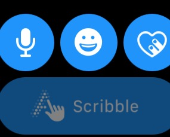
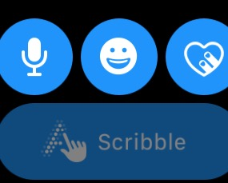
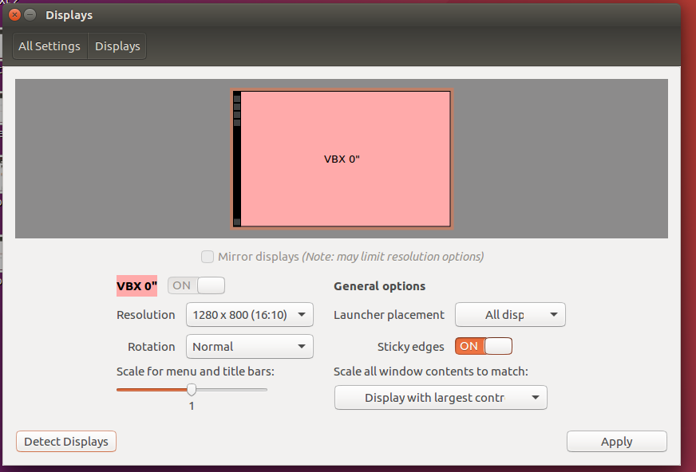
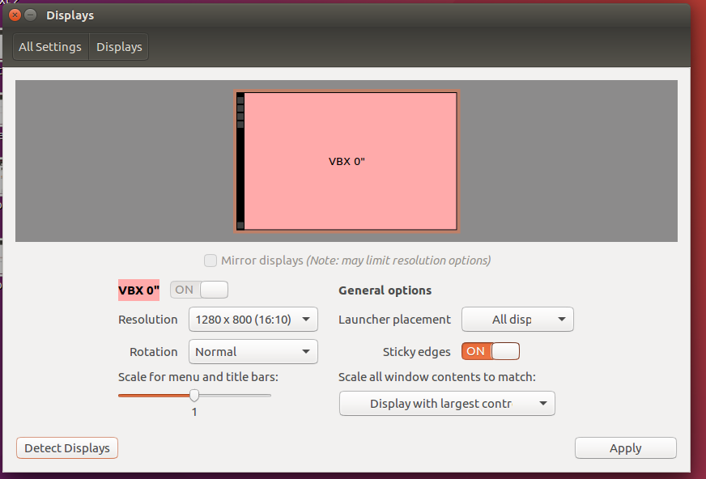

Typical Appearance
Generally, across any platform, a button will take the form of a shape whose form will elicit some understanding of the button's function, or will display a design that would hold the same purpose. Buttons tend to look similar throughout many platforms.
Typical Behavior
Generally speaking, a button will perform no action while idle. Upon being pressed, a button will perform its action, then will return to its idle state. Buttons are sometimes highlighted according to the typical action that a user will take. For example, the buttons OK and CANCEL might be right next to each other on a page, but it is likely that OK will be highlighted, while CANCEL will not be.
Events
A button's event is simply the function of a particular button. There are two common button events. The first is the click. A click event indicates that the button has been initialized and upon release will perform its action. This is closely related to the release event. The second event is "hover." If the user interface is well-made, when the user hovers over a button, the mouse pointer will change shape to let the user know that there is an option for a "click" event to occur.
State Diagram
The following diagram shows the 5 states of a standard button, and the different triggers that cause them to be entered/left.
The enabled and disabled states can be considered idle button states, as they are the only possible states the button can hold without user interaction. The enabled state indicates that a user can interact with it, while the disabled indicates that a user cannot.
When a button is enabled, additional states may be triggered. Of course, these states are subject to vairation depending upon the system in use, but a general list of the states are:
hover: For platfoms with peripherals such as mice or styluses, positioning the cursor over the button will elicit this state. Generally, it is indicated visually by a highlighting effect on the button. This is done to indicate that the button is prepared to be interacted with.armed: Should the user interact with the button with a click, press, etc. the button may enter this state, indicating that the button is prepared to perform its action upon being released from this state. Most systems have a way to exit this state without actually activating the button many button implementations allow an “out” from this state, in case the user changes his or her mind in mid-action.
Component in Action
Below is a embedded video of our component in action as well as some example buttons.

Variants
Buttons are some of the most versatile and widely used interface components. They indicate an action upon touch, and are typically labeled using a text icon or both. Some of the most significant variances in button function are as follows:
- Check Boxes function almost identically to buttons, with an additional set of states. These additional states indicate whether or not the check box has been checked or not. Things like
hoverandarmedare shared. In terms of function, check boxes are useful for visualizing options. - Links allow the user to navigate to a different page with just the one click. Links function essentially as buttons, as they generally hold all the same states and rarely have any unique states. The distinction here is that a link is specifically made to navigate to a different display from the one the link exists on. Links are very easily distinguishable from other buttons because they are usually underlined, blue, and when a mouse pointer hovers over them the mouse becomes a hand icon.
- Dropdown Buttons display a drop-down list of mutually exclusive items. They sometimes resemble a menu and can be referred to as Menu Buttons.
- Toggles allow the user to change a setting between two different states. Toggle buttons are most effective when the on/off states are visually distinct.
Priority Metrics
- Learnability/Memorability: Buttons are an essential part of most modern digital user interface used today. Because of this buttons should universally similar in function and appearance. As mentioned above, the typical appearance of a button is a simple shape with some text or an icon inside of it. Since buttons are typically the same throughout all platforms, it should not be difficult for users to be able to figure out how to use nor identify them.
- Efficiency/Errors: Each button has one action to complete, thus once clicked the action should be performed fairly quickly. There should be no delay or too much time waste from the time where the user knows what they want to do and when they actually click the button. Relating to that, buttons should be well-labeled and in a position where users will not accidentally mistake one button for another. For example, everyone knows the placement of the OK and CANCEL buttons, so if one platform were to decide to switch those, a lot of users would do the wrong action.
- Satisfaction: Users do not really find any satisfaction in clicking buttons so this metric is not completely applicable to buttons. On the other hand, sometimes buttons do crazy things, for example, Google's "I'm feeling lucky" button sometimes shows fireworks on the screen, but it won't do that every time. Besides that, satisfaction does not really apply unless a certain button has a special function.
Key Characteristics
According to Google, buttons can hold different design characteristics based upon the significance they hold in comparison to the content surrounding the button. For example, adding a raised effect to the button or adding a shadow to it for a 3D effect can make it more pronounced. See the below images for examples.
Feedback
By far the most important interaction design principle that a button must follow is feedback. Users must never doubt whether:
- they did positively trigger a button and are thus the device is going to perform the appropriate action
- they successfully cancelled the triggering of a button, and subsequentially the button's resulting function will not take place
Platform-Specific Instances
CyanogenMod 12.1 based on Android 5.1.1 Lollipop
On CyanogenMod 12.1, buttons are fully compliant with Google's material design. They are generally very simple and clean, using vibrant colors to stand out on the screen. They are almost always either simple shapes such as rectangles or circles, and use graphics on the buttons to make it clear what function will be performed after pressing the buttons.
Here is an example of the simple, yet vibrant button design in the calander application.
Unlike devices that utilice peripherals for input such as mice and styluses, most Android based devices operate fully based upon touch input. The difference this makes is that there can be no hover state for buttons. Conversely, touch input allows for a new state that the other systems do not, which is hold. In CM 12.1, when holding a button, if the button has a secondary function, this is how it is accessed. This will usually include such things as advanced options, or a popup containing a context-sensitive menu. For buttons that do not have such features, holding the button will cause it to highlight, and a circle will expand from the point of contact with the screen to cover the whole button. This provides a pleasant visualization that makes it clear that the touch has been registered, and also adds a nice boost to the satisfaction usability metric.
Here you can see an example of the Android Version button being held down, and is therefore being highlighted and you can see the circle blooming across the surface of the button.
Here you can see the gear button in the top of the image being selected, and is subsequentially being highlighted to visualize the fact that it is being activated.
Here, the home button at the bottom in the middle has been held down, and an alternate button has popped up that will, in this case, bring you to the Google Now application, should the user choose to press on it.
Alto
Amiga
Material Design
watchOS
Credits & References
Button1.gif: http://microsoft-news.com/
https://www.google.com/design/spec/material-design/introduction.html
Platform-Specific Instances
Windows 10
As mentioned above, even for Windows 10 buttons, buttons are typically rectangular but sometimes may either have mildly rounded corners or really sharp edges. The default button has a blue dotted line around it. Windows also tends to draw attention to more important buttons by either highlighting or making the button bigger.
Typically the EXIT, MINIMIZE, and MAXIMIZE controls are all at the upper right hand corner of the window.
Windows also color-codes a lot of their buttons. For example, RED will be used for
SHUT DOWNbecause RED is a danger color and lets the user know that once they click that button there is no going back. YELLOW will be used forLOG OFFwarning the user that this is a semi-critical button. Then there are other buttons such as HELP that are a soft blue color because pressing them will not do anything to your program.Windows has recently created a completely different way to display buttons, applications and commands on their screen. Clicking one one of these buttons will navigate the user to a different page.

Credits & References
http://usabilitypost.com/2009/04/15/8-characteristics-of-successful-user-interfaces/#efficient
http://foundation.zurb.com/docs/components/dropdown_buttons.html
http://www.howdesign.com/web-design-resources-technology/helping-users-navigate-websites/
Watch OS
Typical Appearance
- There are a few different button styles on the Apple watch. The most prevalent being rectangular buttons with rounded corners and the fully circular buttons; both are as pictured below:


Typical Behavior
The functionality of buttons on the watchOS mirror the general button functions. They perform a function upon being pressed. Buttons generally are usually armed when pressed, but do not activate until the user releases his/her finger off the button. This allows for one to cancel the button activation by sliding the finger off the armed button instead of releasing. However, since the Apple watch’s primary input source is as touchscreen, buttons tend to sometimes have additional functions when held instead of clicked. When clicked watchOS buttons fade to provide feedback to the user.
 

Variants:
- There are less variation of button types on watchOS because of the small screen of the apple watch. Certain buttons like drop down menus, or check boxes are not practical because of the less precise touch input instead of something like a mouse. However, there are two variations that are the most common on watch OS.
Toggle Buttons:Toggle Buttons: These buttons when clicked stay activated or “toggled” state until clicked again to deactivate. This is can be seen with the silent button where red means it has been toggled.

Switches:Another common type of button is the switch. This has the same function as the toggle button and remain active as long as they are enabled, but they have switch like appearance. The switch is active when it is on the right revealing the green.

Key Characteristics:
- The most effective buttons are the ones that are simple, and do their function seamlessly with the rest of the application. This is especially important with the watchOS because the apple watch has a small touchscreen. This makes it even more important than usual to have well designed buttons that have a quick response time. This is because most of the user inputs are quick touches, and need to be designed to be easily and quickly pressed on the wrist of the user. Certain buttons such as radio buttons appear on most other platforms, but do not appear on WatchOS because they are impractical for the small sized screen. Lastly, clear labeling of buttons (whether in text or image form) are imperative for fast identification of said button.

Priority Metrics:
Learnability/Memorability:As described in the appearance section WatchOS buttons generally take the same curved shape, (whether rectangular or circular) and are either clearly labeled with text or an image. This allows new users that are familiar with other apple operating systems to quickly identify the function of particular buttons.Efficiency/Errors:These are arguably the most important metrics for buttons. This is because buttons are functional by nature, and their functionality is the number one priority. WatchOS’s use of clearly labeled buttons that all possess a rounded shape helps users quickly recognize them. Additionally, users that are familiar other apple products will already recognize some of the buttons. This leads to both an increase in efficiency and lowers number of errors.Satisfaction:Just like on most platforms, the satisfaction metric is less of a concern for buttons on WatchOS. It is more important to make the button efficient and work correctly.
Sources
- All of Apple’s watchOS’s interface guidelines can be found here: https://developer.apple.com/watchos/human-interface-guidelines/
- Introduction to different types of buttons can be found: https://uxplanet.org/button-ux-design-best-practices-types-and-states-647cf4ae0fc6#.2hjbyiue8
iOS 10
Typical Appearance
iOS 10 buttons are always round, rectangular with rounded corners, or an indistinguishable shape (clear background with a title). All iOS 10 buttons have customizable backgrounds, titles, and icons. Apple's libraries provide a large amount of predefined button styles for almost every use case. If Apple's system does not cover a developer specific button use, the developer can design custom buttons. Even then, there are design guidelines to follow. All iOS 10 buttons contain very simple icons with or without capitalized titles, or only capitalized titles. The background color for buttons can differ depending on how the button is being used. In-app buttons tend to have no background color and a distinct title color. Buttons that layer on top of the application will have an white opaque background color. iOS 10 also uses simple border colors with a clear background for some of the buttons.


Typical Behavior
- The functionality of buttons in iOS 10 mirror the general button functions; they perform a function upon being pressed. The Apple guidlines stress making the buttons action clear through the design.
- Buttons are armed when pressed, but do not activate until the user releases his/her finger off the button. This allows for one to cancel the button activation by sliding the finger off the armed button instead of releasing. Since the Iphone's primary input source is as touchscreen, buttons tend to sometimes have additional functions when held instead of clicked. With the introduction of 3Dtouch, most iOS 10 buttons have another layer of functionality when pressed down with force.
- When clicked, iOS 10 buttons activate an animation to provide feedback to the user input.


Variants:
System Buttons:Toggle Buttons: These buttons when clicked stay activated or “toggled” state until clicked again to deactivate. This is can be seen with the silent button where red means it has been toggled.

Detail Disclosure and Info Buttons:Another common type of button is the switch. This has the same function as the toggle button and remain active as long as they are enabled, but they have switch like appearance. The switch is active when it is on the right revealing the green.


Segmented Controls:Another common type of button is the switch. This has the same function as the toggle button and remain active as long as they are enabled, but they have switch like appearance. The switch is active when it is on the right revealing the green.
Switches:Another common type of button is the switch. This has the same function as the toggle button and remain active as long as they are enabled, but they have switch like appearance. The switch is active when it is on the right revealing the green.

Key Characteristics:
- The most effective buttons are the ones that are simple, and do their function seamlessly with the rest of the application. This is especially important with the watchOS because the apple watch has a small touchscreen. This makes it even more important than usual to have well designed buttons that have a quick response time. This is because most of the user inputs are quick touches, and need to be designed to be easily and quickly pressed on the wrist of the user. Lastly, clear labeling of buttons (whether in text or image form) are imperative for fast identification of said button.

Priority Metrics:
Learnability/Memorability:As described in the appearance section WatchOS buttons generally take the same curved shape, (whether rectangular or circular) and are either clearly labeled with text or an image. This allows new users that are familiar with other apple operating systems to quickly identify the function of particular buttons.Efficiency/Errors:These are arguably the most important metrics for buttons. This is because buttons are functional by nature, and their functionality is the number one priority. WatchOS’s use of clearly labeled buttons that all possess a rounded shape helps users quickly recognize them. Additionally, users that are familiar other apple products will already recognize some of the buttons. This leads to both an increase in efficiency and lowers number of errors.Satisfaction:Just like on most platforms, the satisfaction metric is less of a concern for buttons on WatchOS. It is more important to make the button efficient and work correctly.
Sources
- All of Apple’s watchOS’s interface guidelines can be found here: https://developer.apple.com/watchos/human-interface-guidelines/
- Introduction to different types of buttons can be found: https://uxplanet.org/button-ux-design-best-practices-types-and-states-647cf4ae0fc6#.2hjbyiue8
Ubuntu 16.04.1 LTS Unity (Xenial Xerus)
Typical Appearance
- There are various types of buttons found throughout the Ubuntu interface, each providing a useful function.The most widely used button of them all however, is a box with slightly rounded edges. Examples of these buttons are shown below:
Typical Behavior
- For most buttons, when the cursor is hovered over the button, there is a slim orange line around the outer rim of the button that appears.
- When the button is actually clicked, there is a greyish hint to the actual button, sort of as a flash and then goes away when you are redirected to where the button takes you.

Key Characteristics
Key Characteristics:Ubuntu push buttons have a clean initial look and form a visually appealing colorful outer rim when pressed or in some cases hovered over. This type of button is easily recognizeable and holds in it plain text of the buttons function. Radio buttons are different because they are only mainly when you want to select only one of the multiple options. Just as with check boxes, when radio buttons are pressed they highlight the text of the current selection and make the user feel like the whole section is selected (when the radio button/check box selected, the text is also highlighted next to it). This can ultimately distract the user when in reality all you need to do is see the radio button or check box get selected to make it more clean, however,m this is not the case with Ubuntu Unity.
Variants
Push Buttons:Push Buttons for Ubuntu there is one widely used button that is white and rectangular with rounded edges. When clicked this button gets an orange color around the outer edge of the button and stays this way until the buttons function takes us to the next area. Below are two examples of such a button:
 

Radio ButtonsRadio buttons are used to display a group of mutually exclusive, but related, choices.Radio buttons should contain a text label to describe the choice it represents. This should be implemented in because users need to know exactly what they're choosing.Unlike checkboxes, radio buttons should be used ONLY if the user is picking multiple choice at the same time. Radio buttons should only be used for selecting 1 option. In the case of Ubuntu, there appears a highlighted orange-tinted box behind the text of the option being currently selected.
Check BoxesCheckboxes work like a toggle switch: they are used to describe a state, action, or value that can either be on or off. Like radio buttons, checkboxes are used for choice selection. However, unlike the radio buttons, checkboxes are used to select more than one option or toggle a setting on or off. Some checkboxes are arranged in a column, however, as show in the picture below they are used horizontal from one another. As in the radio buttons, there appears a highlighted orange-tinted box behind the text of the option being currently selected but can never be highlighted both at once because it follows the last click

Priority Metrics
Learnability/Memorability:Learnability/Memorability: Since the button is such a fundamental part of virtually every user interface available today, it can be argued that all usability metrics are equally important for this component. It is almost expected that when users who are seeing a button in a given platform for the first time, should not have any issues recognizing the button and knowing what to do with it (learnability). The high priority of learnability also implies that memorability is a given as well as the overall look helps with memorability if it is unique in its own way.Efficiency/Errors:Users must also never experience undue delays with using a button (efficiency), particularly because using a button almost always involves an instantaneous, immediate-result action. Buttons have been almost perfected on other platforms, so there is a general expectation that a button will execute its’ function quickly and accurately. When a user doesn’t receive this they will get frustrated. Users should almost never trigger a button by mistake (errors)—especially buttons whose actions result in significant changes to data or the real world. This can be prevented by having backup messages after a button is clicked to make sure that the user is aware of their press and if they want to continue with it.Satisfaction:If any metric at all can be considered as a “low priority” for buttons, it would be satisfaction. The button is such a utilitarian component that “fun” or “enjoyment” is hardly associated with its use. One exception to this prioritization may be for buttons in applications whose primary metric is satisfaction (e.g., games, entertainment). As a part of that overall system, making buttons “fun” may then become more important than in other situations. Overall, satisfaction for buttons is one of those situations where people expect the button to perform a function, and if there is any stray from the expected performance of that button click, the satisfaction goes down.
Sources
- All of Apple’s watchOS’s interfance guidlines can be found her: https://developer.apple.com/watchos/human-interface-guidelines/
- Introduction to different types of buttons can be found: https://uxplanet.org/button-ux-design-best-practices-types-and-states-647cf4ae0fc6#.2hjbyiue8
Mac OS X Buttons
Buttons are probably the most common and useful graphical user interface element found in the Mac OS X interfaceTypical Appearance
There are various types of buttons found throughout the Mac OS X interface, each providing a useful function. Examples of these buttons are shown in the following
Variants of Buttons
Push Buttons


- Push buttons in OSX are meant to be used specifically in the window body only and always contain text, never an image.
- By default, Mac OSX buttons are white unless it is the default button in a dialog window, in which case it is light blue
- Push buttons are also meant to be used to perform an instantaneous action, such as Print, Delete, or Open (In these cases, the push buttons are also blue).
- Push buttons should NEVER mimic the behavior of other controls. This is because push buttons are meant to give an immediate reaction when the user clicks a push button.
- Push buttons shouldn't indicate a state such as on or off. Instead, checkboxes should be used
- Push buttons also shouldn't be used as a label or a menu
Radio

- Radio buttons are used to display a group of mutulally exclusive, but related, choices
- The content and labels of radio buttons don't change depending on the context nor do they display customs texts or images
- Radio buttons should contain a text label to describe the choice it represents. This should be implemented in because Users need to know exactly what they're choosing.
- Unlike checkboxes, radio buttons should be use ONLY if the user is picking multiple choice at the same time. Radio buttons should only be used for selecting 1 option
- When it comes to labeling and arranging radio buttons, each one should contain a text label that describes the choice it represents and alos have a consistent amount of spacing between each one
Check Box


- Checkboxes work like a toggle switch: they are used to describe a state, action, or value that can either be on or off.
- Like radio buttons, checkboxes are used for choice selection. However, unlike the radio buttons, checkboxes are used to select more than one option or toggle a setting on or off (as shown in the picture above)
- Checkboxes are also used to toggle other selections on or off. For example, in the second picture shown above, when a checkbox selection is unselected, other options such as the dropdown menu and the push button become disabled
- Checkboxes should be arranged in a column. This makes it easier for users to distinguish states from one another
Gradient Button

- Gradient buttons perform instantaneous actions related to view, such as a source list
- Gradient buttons can contain push buttons, toggles, or popup menu behavior.
- Unlike other buttons such as the radio button or the push button, gradient buttons only contain images. NOT text
- Gradient buttons are also used to offer functionality that is closely tied to a particular action without the need to include text.
- To make gradient buttons more user friendly, it is better to use system provided images as gradient buttons as they are more familiar to the user.
Help Button

- The help button is always designated as a clear, circular button with a question mark graphic.
- When pressed, the help button opens up a popup window that displays app-specific help.
- Help buttons should be used to perform the function of the standard Help button. A custom button should not be made in replacement
- In most windows found on OS X, the help button is always located on the bottom right corner. In dialog boxes that include push buttons such as "OK" and "Cancel", the help button is located on the bottom left of the window
Sources
- All information on MAc OS X buttons, as well as other features found on OS X, can be found here: https://developer.apple.com/library/mac/documentation/UserExperience/Conceptual/OSXHIGuidelines/ControlsButtons.html#//apple_ref/doc/uid/20000957-CH48-SW1